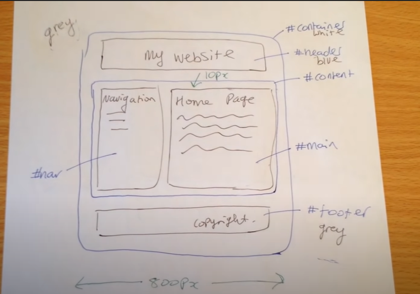

Web Development and Project Management
HTML
I learned that HTML can be created usinng multiple platforms. One of the platform I am using is called Brackets. You can use normal notebook to code your website too. The image above is the HTML skeleton. It is a basic structure that in every HTML website uses.
There are several codes for you to use. For example, if you want to have different sizes for the title, we uses the "h1", "h2", "h3" tag. The picture above will help you see the diffence. You can also use the "ul" for unordered list and "ol" for ordered list. These are few examples of what I have learned. For more information you can go to W3schools.
CSS

CSS is the language for describing the presentation of Web pages, including colors, layout, and fonts. Before you proceed to make your website, it is best to plan out your layout of your website just like the image above. Then catagorize them using "div" tag. Inside the CSS stylesheet, you can add colours, change fonts and position of the individual "div" tag containers. This will make your process of making your website easier and much faster. For more information you can go to W3schools.
GITHUB
After you complete your website in your local desktop, you can upload it inside a Respository. Any updates you want to update from your website, you can use GitHub Desktop. This way, you dont have to delete and make new Respository. For more information you can go to GitHub.
GITHUB DESKTOP
You can use GitHub Desktop to quickly get to work with a Git repository without needing to use the command line. You can create your own respository or clone existing respository from Github. This is best for working with other people on a project.
This is the menu bar located on top of Github Desktop. The Current repository shows the name of the repository you're working on. You can click Current repository to switch to a different repository in GitHub Desktop.Current branch shows the name of the branch you're working on. You can click Current branch to view all the branches in your repository, switch to a different branch, or create a new branch. Once you create pull requests in your repository, you can also view these by clicking on Current branch. Once you have done all the changes with your project. You can press Commit to master and publish it.
The History view shows the previous commits on the current branch of your repository. You should see an "Initial commit" that was created by GitHub Desktop when you created your repository. It ibky shows the parts of the file that have changed, not the entire contents of the file